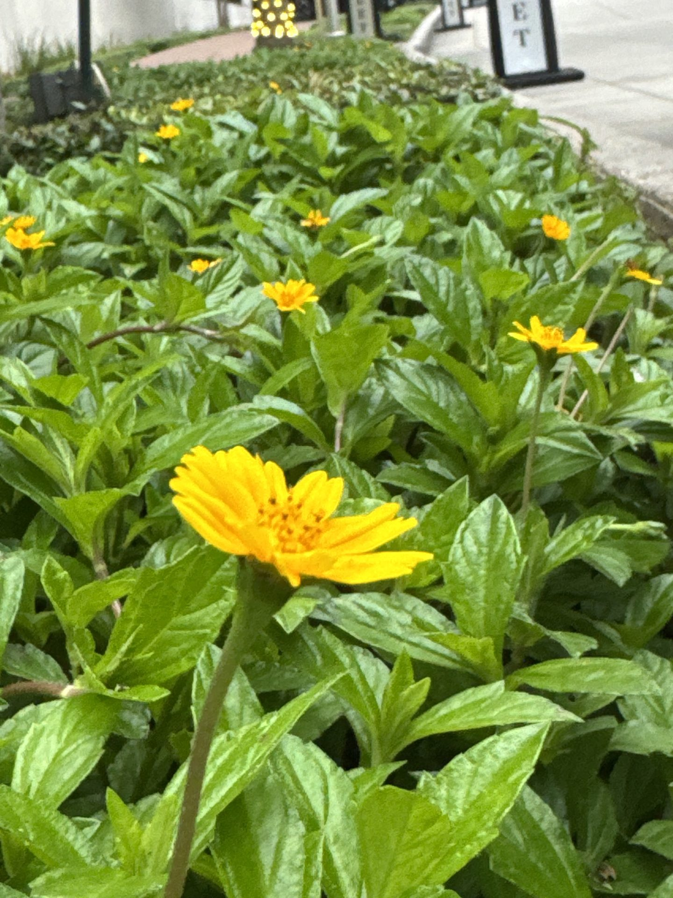
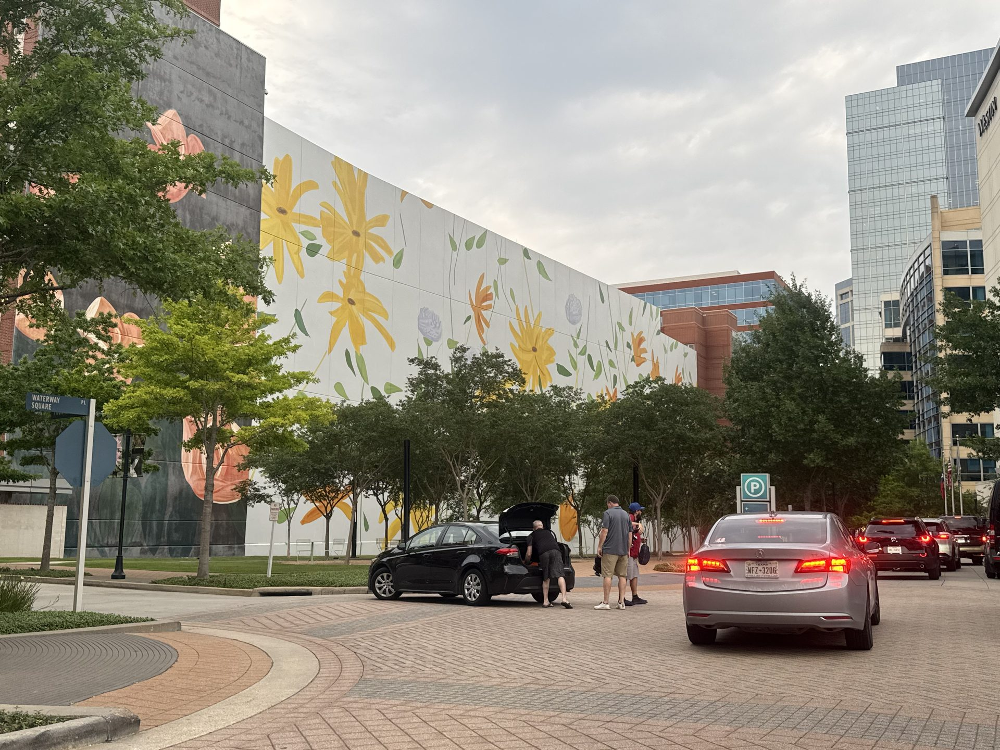
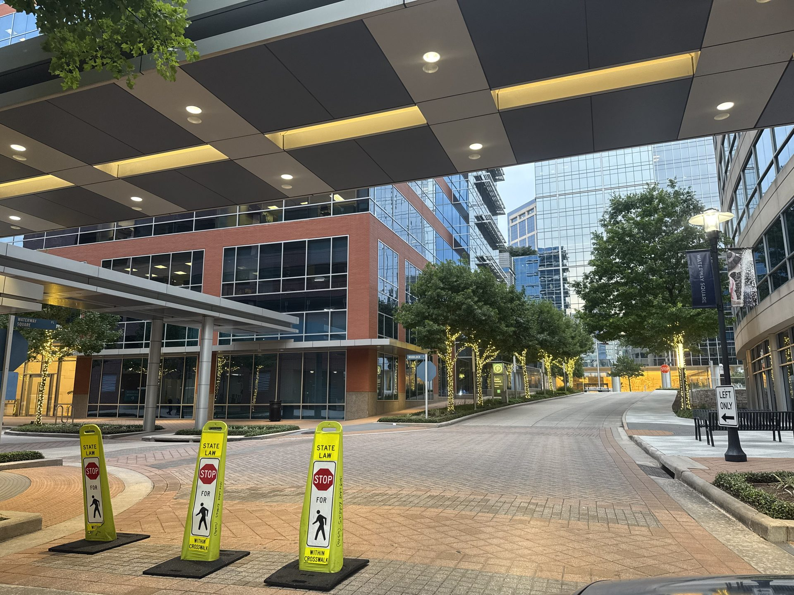
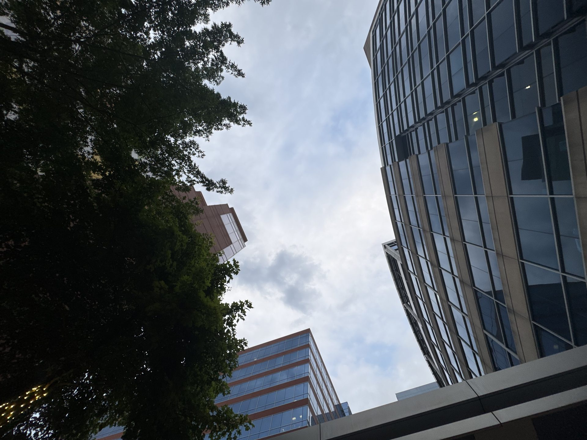

About the Photographer

City Through My Lens
For this series, I decided to focus on the urban landscape in The Woodlands, a place filled with waterways, bridges, reflections, and skylines that people often pass without noticing. I wanted to capture both the energy and calmness that can exist in the same environment and show the beauty hidden in everyday spaces.
I was inspired to come back and photograph this place because I needed to get away from everything for a while. I spent the entire day walking around, taking in the atmosphere, and slowing down enough to really notice the details around me. That experience is what made me choose this location for my final project. Out of more than 100 photographs, narrowing it down to 15 was difficult because so many moments stood out to me. I found myself drawn to reflections in the water, dramatic skies, sunsets, and the contrast between nature and the city structures surrounding it.
The main themes in my photography are environment, movement, and perspective. I wanted my photographs to show that urban spaces are more than roads and buildings — they hold emotion, memory, and everyday life. I also wanted to highlight how nature still exists within the city through the water, trees, and plants mixed into the landscape.
Throughout this project, I experimented with different angles, compositions, and natural lighting to create stronger images. I used reflections, low-angle shots, close-up details, worm's-eye view, bird's-eye view, and the rule of thirds to add depth and guide the viewer's attention.
Through these photographs, I hope viewers slow down and appreciate the details around them. My goal was to capture ordinary places in a way that feels honest, immersive, and meaningful.


